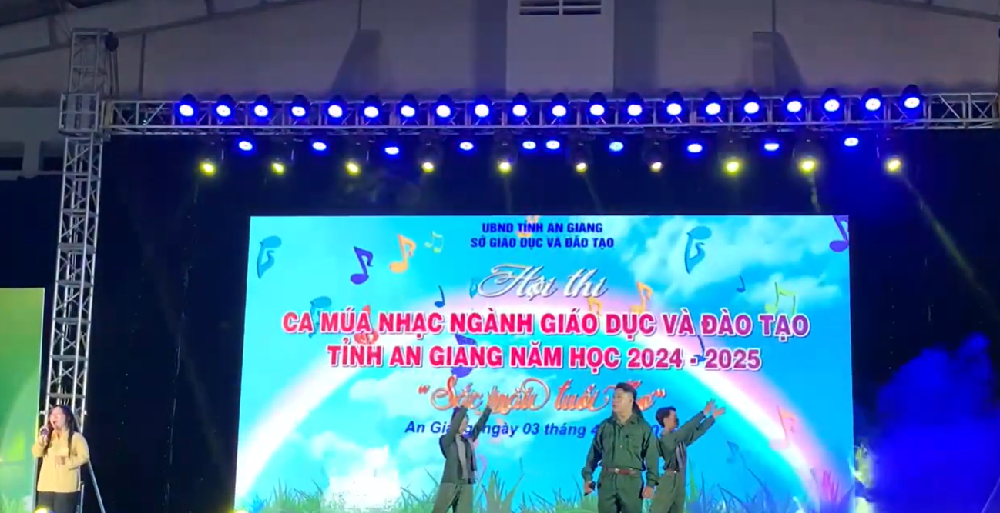

Các tiết mục ca múa nhạc mừng xuân tại Trường THPT Nguyễn Văn Thoại luôn được đầu tư chuẩn bị một cách chu đáo, công phu và đa dạng về thể loại, trở thành điểm nhấn đặc sắc của mùa lễ hội đầu năm. Mỗi tiết mục không đơn thuần là một phần trình diễn mà còn là một câu chuyện nghệ thuật được dệt nên từ sự sáng tạo, nhiệt huyết và tinh thần đoàn kết của cả tập thể lớp, câu lạc bộ. Từ những điệu múa dân gian duyên dáng, uyển chuyển mang hơi thở của mùa xuân đất nước, đến những màn hợp xướng, tốp ca rộn ràng với ca từ tươi vui; từ những tiết mục nhạc kịch sáng tạo, hài hước đến những màn biểu diễn nhạc cụ dân tộc hoặc hiện đại đầy ấn tượng – tất cả cùng hòa chung vào một bức tranh xuân sống động, tràn đầy sắc màu tuổi trẻ.
Linh Thiêng Việt Nam - Nhạc sĩ Lê Quang - Trình bày Trần Tùng Dương
Chương trình nghệ thuật mừng xuân này đã vượt ra khỏi khuôn khổ một hoạt động giải trí thông thường. Nó thực sự trở thành một sân khơi giá trị, nơi học sinh toàn trường có cơ hội thể hiện bản lĩnh sân khấu, khả năng dẫn dắt, phối hợp và sự tự tin trước đám đông. Đằng sau những màn trình diễn lấp lánh trên sân khấu là cả một quá trình luyện tập miệt mài, những giờ tranh luận để lựa chọn ý tưởng, những buổi tập sau giờ học đầy ắp tiếng cười và đôi khi là cả những giọt mồ hôi, nước mắt. Quá trình ấy rèn giũa cho các em tinh thần trách nhiệm, ý thức kỷ luật và đặc biệt là tình bạn, tình đồng đội gắn bó – những giá trị cốt lõi của tinh thần tập thể.
Đất Rừng Phương Nam, Cô Gái Mở Đường, Đất Rừng Phương Nam- 11A4 THPT Nguyễn Văn Thoại
Không gian hội trường hay sân khấu ngoài trời vào những ngày diễn ra chương trình luôn chật kín người, với sự cổ vũ nhiệt tình của hàng nghìn học sinh và giáo viên. Không khí ấy trở nên vô cùng sôi động, hào hứng, mang đậm không khí lễ hội mùa xuân, xua tan đi những căng thẳng của những ngày học tập cuối kỳ. Tiếng vỗ tay, tiếng reo hò, những ánh đèn điện tử lung linh cùng những gương mặt rạng rỡ tạo nên một bầu không khí ấm áp, kết nối những trái tim trẻ tuổi.

Sân khấu biểu diễn được trang trí rực rỡ sắc xuân
Có thể khẳng định, đêm hội ca múa nhạc mừng xuân là một trong những hoạt động ngoại khóa nổi bật, thu hút và có sức lan tỏa mạnh mẽ nhất trong đời sống học đường tại Trường THPT Nguyễn Văn Thoại. Nó không chỉ góp phần gìn giữ và phát huy văn hóa truyền thống dân tộc trong ngày Tết cổ truyền, mà còn là một món ăn tinh thần bổ ích, một kỷ niệm đẹp đẽ khó phai trong hành trang tuổi học trò của mỗi thế hệ học sinh mái trường này. Hoạt động ý nghĩa này chính là minh chứng cho một môi trường giáo dục toàn diện, nơi học sinh không chỉ học tập tốt mà còn được phát triển năng khiếu, nuôi dưỡng tâm hồn và kỹ năng sống phong phú.